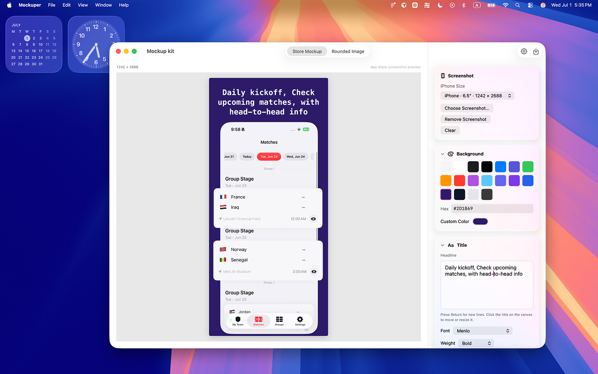

Native Mac app for app creators
Create a cohesive App Store presence
Compose iPhone App Store screenshot mockups with your colors, headlines, and artwork. Give every listing update a consistent visual story, right from your Mac.
Coming in 2.6 Headers & Search Results studioOne successful selected export is free. Premium unlocks unlimited selected exports and Export All. Current plans and local prices appear in the purchase sheet.
